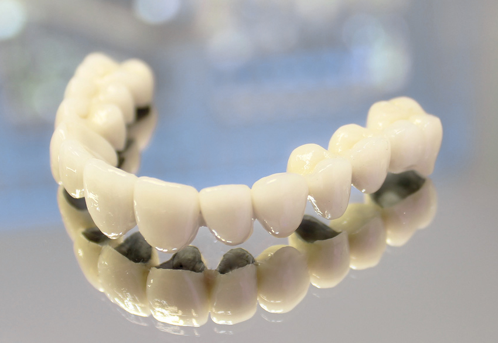

Металлокерамика — искусственный материал, представляющий собой гетерогенную композицию металлов или сплавов с неметаллами (керамикой).
 В стоматологии металлокерамикой называют несъемные зубные протезы (мостовидные протезы, коронки), представляющие собой прочный металлический каркас с нанесенной на него керамической массой.
Все виды металлокерамики имеют в своем составе не только керамику, но и внутренний каркас, который составляет основную прочность металлокерамики.
Разные виды металлокерамических протезов отличаются друг от друга прочностью, индивидуальной переносимостью, эстетическиими качествами и соответственно стоимостью. Качество изготовления и установки всех видов металлокерамики в нашей стоматологии на высшем уровне.
| Материал | Преимущества | Недостатки |
| Коронки на основе хромо-никелевого сплава | Плюсом таких коронок является дешевизна, так как в качестве основы применяются неблагородные металлы: хром, никель или кобальт | Минусом этих коронок является возможность присутствия индивидуальной непереносимости (аллергических реакций) |
| Коронки на основе кобальт-хромового сплава | ||
| Коронки на основе золото-платинового (палладиевого) сплава |
Плюсом таких коронок является лучшая прочность каркасного основания, за счет чего прекрасно переносятся жевательные нагрузки | Минусом этих коронок является значительно высокая стоимость |
| Коронки на основе титанового сплава |
Для определения цвета используется шкала цветовых оттенков Vita. Эта шкала делит цвет зуба на четыре основных диапазона оттенков:
A (Красновато- коричневый цвет)
В (красновато- желтый)
С (серый)
D (красновато- серый)
Наш стоматолог вместе с вами выберет подходящую расцветку, внимательно проведя осмотр, подобрав цвет зубов при дневном освещении с помощью специальных светильников.
Изготовление металлокерамики состоит из нескольких этапов. На первом (клиническом) этапе врач-стоматолог ортопед составляет план лечения и направляет Вас на первичную подготовку зубов к протезированию, которая заключается в полной санации полости рта и лечении корневых каналов опорных зубов. Далее следует препарирование - процесс «обточки» (подготовки) зубов, снятия слепка и фиксации временных коронок. На данном этапе очень важна квалификация стоматолога, т.к. допущенные ошибки впоследствии могут ухудшить состояние зубов.
На втором (лабораторном) этапе за дело берется зубной техник, который работает как ювелир. Сначала изготавливается каркас будущей работы. Он может быть отлит из разных сплавов – никель-хром, кобальт-хром, золото-палладий или титан. А далее на каркас наноситься специальное керамическое покрытие под цвет Ваших зубов. Сплав и керамика подбирается на персональной консультации с врачом в зависимости от Ваших потребностей, возможных аллергических реакций и состояния полости рта. Завершается установка несъёмного протеза фиксированием его на подготовленные зубы, с использованием специального цемента.
Фото 1 (восстановление одного верхнего переднего зуба): до и после установки металлокерамической коронки на имплантант.
Фото 2 (восстановление нижних жевательных зубов): до и после установки металлокерамического моста на имплантанты.
Фото 3 (зубная вкладка под коронку): до и после установки металлокерамического моста на верхние зубы.
Металлокерамика и установленные мостовидные протезы не требует особенного ухода. Как и для своих зубов самое главное тщательная гигиена и профилактические осмотры у стоматолога.
Срок службы металлокерамических зубов 10 - 20 лет. Желательна регулярная (раз в год) пришлифовка жевательной поверхности металлокерамических коронок и мостов в соответствии с прикусом.
В нашей клинике предлагаются услуги по восстановлению металлокерамических зубов: исправление отколотой металлокерамики, устранение эффекта "синий десны" и т.д.
Стоимость коронок из металлокерамики вполне приемлема, учитывая гарантию качества в нашей стоматологии. Среднее время изготовления металлокерамики составляет от одной до двух недель. Есть возможность получить металлокерамику быстрее, но стоимость изменится.
Обязательно ли вам устанавливать коронку? Или можно обойтись более щадящими методами восстановления зуба? Запишитесь на консультацию и узнайте.
Запись через сайт является предварительной. Наш сотрудник свяжется с Вами в ближайшее время для подтверждения записи на прием.
| 10.7 | Коронка металлокерамика | 8 500 руб. |
| 10.8 | Коронка м/к с плечевой массой | 9 000 руб. |
| 10.9 | Коронка м/к на винтовой имплантант | 20 000 руб. |
| 10.10 | Коронка м/к на имплантант Astra Tech+ абатмент (цементная фиксация) | 10 000 руб. |
| 10.11 | Коронка м/к на имплантант Astra Tech+ абатмент (винтовая фиксация) | 10 000 руб. |
Вопрос
А у вас в стоматологии можно узнать, будет ли у меня аллергия на металлокерамику?
Ответ: Перед выбором металлокерамики врач ортопед предупреждает о возможности аллергической реакции на никель. Проверить есть ли у Вас аллергия может только врач аллерголог. Металлические протезы вызывают аллергию у малой части пациентов. В подобных случаях рекомендуется выбор цельнокерамической коронки.
Симптомами аллергии является жжение во рту, в области десен и языка, припухлость десны в области соприкосновения с коронкой и отечность.
Имплантация зубов - это операция по установке штифта в челюстную кость. Показания к имплантации - отсутствие одного или ряда зубов, полное отсутствие зубов.
Современная стоматология предлагает множество способов, которые помогут восстановить зубной ряд. К самым распространенным способам...